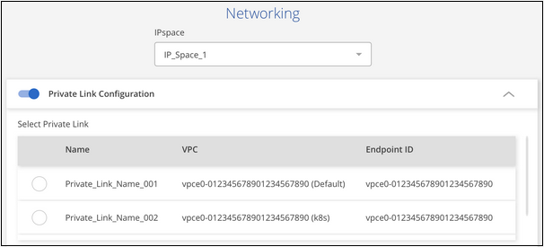
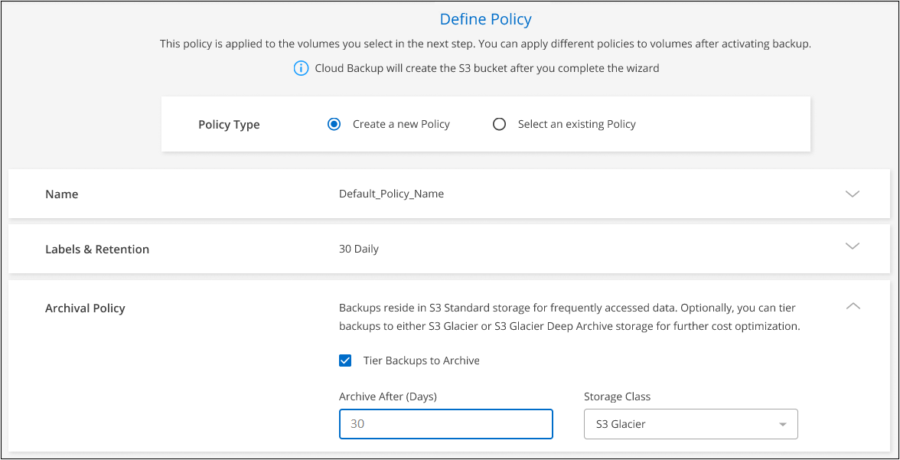
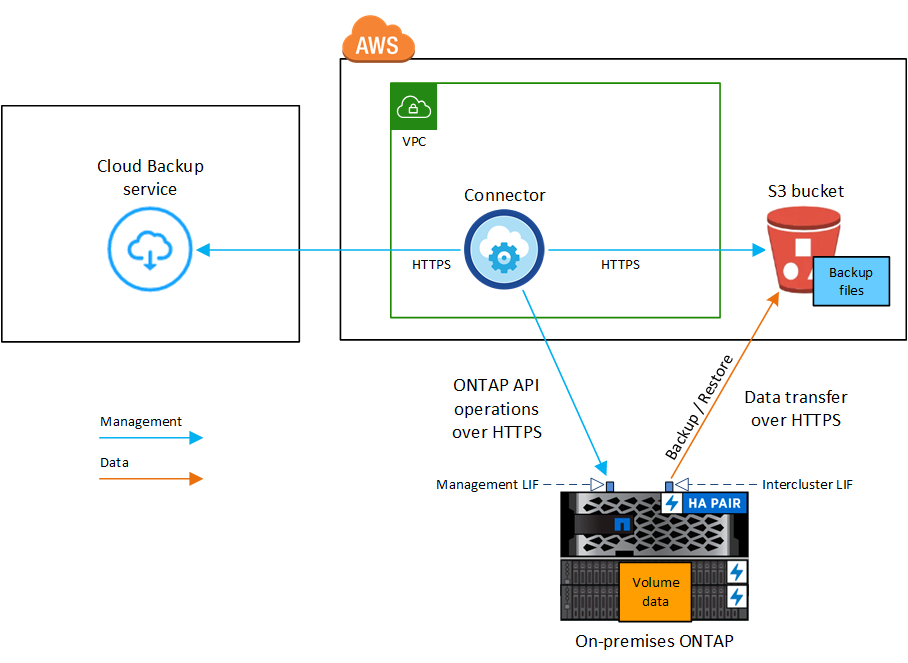
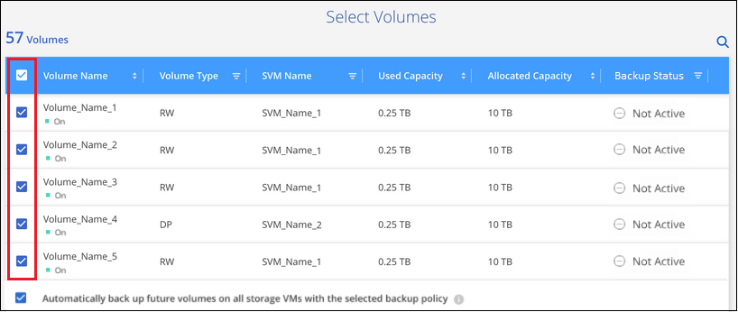

ドキュメントの変更をリクエスト
ドキュメントの変更をリクエスト GitHub で編集
GitHub で編集 寄稿者向けガイド
寄稿者向けガイドオンプレミスの ONTAP データの Amazon S3 へのバックアップ
オンプレミスの ONTAP システムから Amazon S3 ストレージへのデータのバックアップを開始するには、いくつかの手順を実行します。
「オンプレミス ONTAP システム」には、 FAS 、 AFF 、 ONTAP Select の各システムが含まれます。

|
ほとんどの場合、 Cloud Manager を使用してすべてのバックアップおよびリストア処理を実行します。ただし、 ONTAP 9.9.1 以降では、 ONTAP System Manager を使用して、オンプレミスの ONTAP クラスタのボリュームバックアップ処理を開始できます。 "Cloud Backup を使用してボリュームをクラウドにバックアップする方法については、 System Manager の説明を参照してください。" |
クイックスタート
これらの手順を実行すると、すぐに作業を開始できます。また、残りのセクションまでスクロールして詳細を確認することもできます。
{kind=link}
-
オンプレミスクラスタを検出し、 Cloud Manager の作業環境に追加しておきます。を参照してください "ONTAP クラスタの検出" を参照してください。
-
クラスタで ONTAP 9.7P5 以降が実行されています。
-
クラスタには SnapMirror ライセンスがあります。このライセンスは、 Premium Bundle または Data Protection Bundle に含まれています。
-
クラスタから S3 ストレージおよびコネクタへの必要なネットワーク接続が確立されている必要があります。
-
-
コネクタに、 S3 ストレージとクラスタへの必要なネットワーク接続と、必要な権限が必要です。
-
バックアップを格納するオブジェクトストレージスペース用の有効な AWS サブスクリプションが必要です。
-
アクセスキーとシークレットキーを含む AWS アカウントとが必要です "必要な権限" そのため、 ONTAP クラスタでデータをバックアップおよびリストアすることができます。
作業環境を選択し、右パネルのバックアップと復元サービスの横にある *Enable>Backup Volumes] をクリックして、セットアップ・ウィザードに従います。
 ボタンを示すスクリーンショット"]
ボタンを示すスクリーンショット"]
プロバイダとして Amazon Web Services を選択し、プロバイダの詳細を入力します。バックアップを作成する AWS アカウントとリージョンを選択する必要があります。また、デフォルトの Amazon S3 暗号化キーを使用する代わりに、お客様が管理する独自のキーを選択してデータを暗号化することもできます。

ボリュームが配置されている ONTAP クラスタ内の IPspace を選択します。また、既存の AWS PrivateLink 構成を使用して、オンプレミスのデータセンターから VPC へのよりセキュアな接続を確立することもできます。

デフォルトポリシーでは、毎日ボリュームがバックアップされ、各ボリュームの最新の 30 個のバックアップコピーが保持されます。毎時、毎日、毎週、または毎月のバックアップに変更するか、システム定義のポリシーの中からオプションを追加する 1 つを選択します。保持するバックアップコピーの数を変更することもできます。
デフォルトでは、バックアップは S3 Standard ストレージに格納されます。クラスタが ONTAP 9.10.1 以降を使用している場合は、 S3 Glacier または S3 Glacier Deep Archive ストレージにバックアップを階層化して、コストをさらに最適化することができます。

Select Volumes （ボリュームの選択）ページで、デフォルトのバックアップポリシーを使用してバックアップするボリュームを特定します。特定のボリュームに異なるバックアップポリシーを割り当てる場合は、あとから追加のポリシーを作成してボリュームに適用できます。
要件
オンプレミスボリュームを S3 ストレージにバックアップする前に、次の要件を確認し、サポートされている構成であることを確認してください。
次の図は、各コンポーネントとその間の準備に必要な接続を示しています。

クラウドにクラウドリストアインスタンスが導入されている場合、クラウドリストアインスタンスはコネクタと同じサブネットに配置されます。
ONTAP クラスタの準備
ボリュームデータのバックアップを開始する前に、 Cloud Manager でオンプレミスの ONTAP クラスタを検出する必要があります。
- ONTAP の要件
-
-
ONTAP 9.7P5 以降
-
SnapMirror ライセンス（ Premium Bundle または Data Protection Bundle に含まれます）。
-
注： * Cloud Backup を使用する場合、「 Hybrid Cloud Bundle 」は必要ありません。
方法を参照してください "クラスタライセンスを管理します"。
-
時間とタイムゾーンが正しく設定されている。
方法を参照してください "クラスタ時間を設定します"。
-
- クラスタネットワークの要件
-
-
ONTAP クラスタは、バックアップおよびリストア処理用に、インタークラスタ LIF から Amazon S3 ストレージへのポート 443 経由の HTTPS 接続を開始します。
ONTAP は、オブジェクトストレージとの間でデータの読み取りと書き込みを行います。オブジェクトストレージが開始されることはなく、応答するだけです。
-
ONTAP では、コネクタからクラスタ管理 LIF へのインバウンド接続が必要です。このコネクタは AWS VPC 内に実装できます。
-
クラスタ間 LIF は、バックアップ対象のボリュームをホストする各 ONTAP ノードに必要です。LIF は、 ONTAP がオブジェクトストレージへの接続に使用する IPspace に関連付けられている必要があります。 "IPspace の詳細については、こちらをご覧ください"。
Cloud Backup をセットアップすると、 IPspace で使用するように求められます。各 LIF を関連付ける IPspace を選択する必要があります。これは、「デフォルト」の IPspace または作成したカスタム IPspace です。
-
ノードのクラスタ間 LIF からオブジェクトストアにアクセスできます。
-
ボリュームが配置されている Storage VM に DNS サーバが設定されている。方法を参照してください "SVM 用に DNS サービスを設定"。
-
をデフォルトとは異なる IPspace を使用している場合は、オブジェクトストレージへのアクセスを取得するために静的ルートの作成が必要になることがあります。
-
必要に応じてファイアウォールルールを更新し、 ONTAP からオブジェクトストレージへのポート 443 経由の Cloud Backup Service 接続と、ポート 53 （ TCP / UDP ）経由での Storage VM から DNS サーバへの名前解決トラフィックを許可します。
-
コネクタの作成または切り替え
データをクラウドにバックアップするにはコネクタが必要です。 AWS S3 ストレージにデータをバックアップする場合は、コネクタを AWS VPC に配置する必要があります。オンプレミスに導入されているコネクタは使用できません。新しいコネクターを作成するか、現在選択されているコネクターが正しいプロバイダーにあることを確認する必要があります。
コネクタのネットワークを準備しています
コネクタに必要なネットワーク接続があることを確認します。
-
コネクタが取り付けられているネットワークで次の接続が有効になっていることを確認します。
-
Cloud Backup Service へのアウトバウンドインターネット接続 ポート 443 （ HTTPS ）
-
S3 オブジェクトストレージへのポート 443 経由の HTTPS 接続
-
ONTAP クラスタ管理 LIF へのポート 443 経由の HTTPS 接続
-
-
S3 に対する VPC エンドポイントを有効にします。ONTAP クラスタから VPC への Direct Connect または VPN 接続が確立されている環境で、コネクタと S3 の間の通信を AWS 内部ネットワークのままにする場合は、この接続が必要です。
サポートされている地域
すべてのリージョンで、オンプレミスシステムから Amazon S3 へのバックアップを作成できます "Cloud Volumes ONTAP がサポートされている場合"AWS GovCloud リージョンを含む。サービスのセットアップ時にバックアップを保存するリージョンを指定します。
ライセンス要件
Cloud Backup の 30 日間無償トライアルの期限が切れる前に、 AWS から従量課金制（ PAYGO ）の Cloud Manager Marketplace サービスをサブスクライブするか、ネットアップから Cloud Backup BYOL ライセンスを購入してアクティブ化する必要があります。これらのライセンスはアカウント用であり、複数のシステムで使用できます。
-
Cloud Backup PAYGO ライセンスの場合は、へのサブスクリプションが必要です "AWS" Cloud Backup の今後の利用については、 Cloud Manager Marketplace でご確認ください。Cloud Backup の請求は、このサブスクリプションを通じて行われます。
-
Cloud Backup BYOL ライセンスを利用するには、ライセンスの期間と容量に応じてサービスを使用できるように、ネットアップから提供されたシリアル番号が必要です。 "BYOL ライセンスの管理方法について説明します"。
バックアップを格納するオブジェクトストレージスペース用の AWS サブスクリプションが必要です。
クラスタに SnapMirror ライセンスが必要です。Cloud Backup を使用する場合、「 Hybrid Cloud Bundle 」は必要ありません。
バックアップのための Amazon S3 の準備
Amazon S3 を使用している場合は、コネクタに対する権限を設定して S3 バケットを作成および管理する必要があります。また、オンプレミスの ONTAP クラスタが S3 バケットに対して読み取りおよび書き込みを行えるように権限を設定する必要があります。
-
（最新のから）次の S3 権限を確認します "Cloud Manager ポリシー"）は、コネクタに権限を付与する IAM ロールの一部です。
{ "Sid": "backupPolicy", "Effect": "Allow", "Action": [ "s3:DeleteBucket", "s3:GetLifecycleConfiguration", "s3:PutLifecycleConfiguration", "s3:PutBucketTagging", "s3:ListBucketVersions", "s3:GetObject", "s3:DeleteObject", "s3:PutObject", "s3:ListBucket", "s3:ListAllMyBuckets", "s3:GetBucketTagging", "s3:GetBucketLocation", "s3:GetBucketPolicyStatus", "s3:GetBucketPublicAccessBlock", "s3:GetBucketAcl", "s3:GetBucketPolicy", "s3:PutBucketPublicAccessBlock", "s3:PutEncryptionConfiguration", "athena:StartQueryExecution", "athena:GetQueryResults", "athena:GetQueryExecution", "glue:GetDatabase", "glue:GetTable", "glue:CreateTable", "glue:CreateDatabase", "glue:GetPartitions", "glue:BatchCreatePartition", "glue:BatchDeletePartition" ], "Resource": [ "arn:aws:s3:::netapp-backup-*" ] },
バージョン 3.9.15 以降を使用してコネクタを導入した場合、これらの権限はすでに IAM ロールに含まれている必要があります。そうでない場合は、不足している権限を追加する必要があります。検索とリストアに必要な「アテナ」と「グルー」の権限を明確に示します。
-
Browse & Restore 操作で Cloud Restore インスタンスを起動、停止、および終了できるように、コネクタに権限を付与する IAM ロールに次の EC2 権限を追加します。
"Action": [ "ec2:DescribeInstanceTypeOfferings", "ec2:StartInstances", "ec2:StopInstances", "ec2:TerminateInstances" ], -
サービスをアクティブ化すると、バックアップウィザードにアクセスキーとシークレットキーの入力を求められます。そのためには、以下の権限を持つ IAM ユーザを作成する必要があります。ONTAP はこれらのクレデンシャルを ONTAP クラスタに渡して、 がデータをバックアップして S3 バケットにリストアできるようにします。
"s3:ListAllMyBuckets", "s3:ListBucket", "s3:GetBucketLocation", "s3:GetObject", "s3:PutObject", "s3:PutBucketencryption", "s3:DeleteObject"を参照してください "AWS ドキュメント：「 Creating a Role to Delegate Permissions to an IAM User" を参照してください。
-
仮想ネットワークまたは物理ネットワークでインターネットアクセスにプロキシサーバを使用している場合は、 Cloud Restore インスタンスがアウトバウンドのインターネットアクセスを使用して次のエンドポイントに接続していることを確認してください。
エンドポイント 目的 クラウドリストアインスタンス AMI 用の CentOS パッケージ。
¥ http://cloudmanagerinfraprod.azurecr.io ¥ https://cloudmanagerinfraprod.azurecr.io
Cloud Restore Instance のイメージリポジトリ。
-
デフォルトの Amazon S3 暗号化キーを使用する代わりに、アクティブ化ウィザードで独自のカスタム管理キーを選択してデータ暗号化に使用できます。この場合は、暗号化管理キーがすでに設定されている必要があります。 "独自のキーの使用方法を参照してください"。
-
オンプレミスのデータセンターから VPC へのパブリックインターネット経由での接続をより安全にする場合は、アクティブ化ウィザードで AWS PrivateLink 接続を選択できます。これは、 VPN/DirectConnect 経由でオンプレミスシステムに接続する場合に必要です。この場合は、 Amazon VPC コンソールまたはコマンドラインを使用して、インターフェイスエンドポイント構成を作成しておく必要があります。 "AWS PrivateLink for Amazon S3 の使用に関する詳細を参照してください"。
また、 Cloud Manager Connector に関連付けられているセキュリティグループの設定も変更する必要があります。ポリシーを「 Custom 」（「 Full Access 」から）に変更し、前述のようにバックアップポリシーから権限を追加する必要があります。

Cloud Backup を有効にしています
Cloud Backup は、オンプレミスの作業環境からいつでも直接有効にできます。
-
キャンバスから作業環境を選択し、右パネルのバックアップと復元サービスの横にある *Enable>Backup Volumes * をクリックします。
ボタンを示すスクリーンショット"] -
プロバイダとして Amazon Web Services を選択し、 * Next * をクリックします。
-
プロバイダの詳細を入力し、 * 次へ * をクリックします。
-
バックアップの格納に使用する AWS アカウント、 AWS Access Key 、および Secret Key 。
アクセスキーとシークレットキーは、 ONTAP クラスタに S3 バケットへのアクセスを付与するために作成したユーザ用のキーです。
-
バックアップを格納する AWS リージョン。
-
デフォルトの Amazon S3 暗号化キーを使用するか、お客様が管理する独自のキーを AWS アカウントから選択してデータの暗号化を管理するか。 ("独自のキーの使用方法を参照してください"）。
-
-
ネットワークの詳細を入力し、 * 次へ * をクリックします。
-
バックアップするボリュームが配置されている ONTAP クラスタ内の IPspace 。この IPspace のクラスタ間 LIF には、アウトバウンドのインターネットアクセスが必要です。
-
必要に応じて、以前に設定した AWS PrivateLink を使用するかどうかを選択します。 "AWS PrivateLink for Amazon S3 の使用に関する詳細を参照してください"。
-
-
デフォルトのバックアップポリシーの詳細を入力し、 * Next * をクリックします。
-
バックアップスケジュールを定義し、保持するバックアップの数を選択します。 "選択可能な既存のポリシーのリストが表示されます"。
-
ONTAP 9.10.1 以降を使用している場合は、 S3 Glacier または S3 Glacier Deep Archive ストレージにバックアップを階層化して一定の日数後にコストを最適化することができます。 "アーカイブ階層の使用の詳細については、こちらをご覧ください"。
-
-
Select Volumes （ボリュームの選択）ページで、デフォルトのバックアップポリシーを使用してバックアップするボリュームを選択します。特定のボリュームに異なるバックアップポリシーを割り当てる場合は、追加のポリシーを作成し、それらのボリュームにあとから適用できます。
-
すべてのボリュームをバックアップするには、タイトル行（
 ）。
）。 -
個々のボリュームをバックアップするには、各ボリュームのボックス（
 ）。
）。
今後追加されるすべてのボリュームでバックアップを有効にする場合は、「今後のボリュームを自動的にバックアップ … 」チェックボックスをオンのままにします。この設定を無効にした場合は、以降のボリュームのバックアップを手動で有効にする必要があります。
-
-
Activate Backup * をクリックすると、ボリュームの初期バックアップの作成が開始されます。
Cloud Backup が起動し、選択した各ボリュームの初期バックアップの作成が開始されます。 Volume Backup Dashboard が表示され、バックアップの状態を監視できます。
可能です "ボリュームのバックアップを開始および停止したり、バックアップを変更したりできます スケジュール"。また可能です "ボリューム全体または個々のファイルをバックアップファイルからリストアする" AWS の Cloud Volumes ONTAP システムやオンプレミスの ONTAP システムに接続できます。